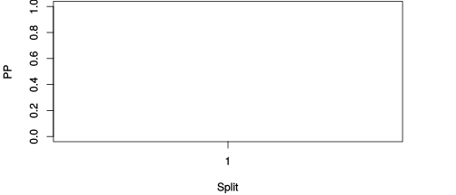

| chain # | burnin | subsample | Iterations (remaining) | command line | subdirectory | directory |
|---|---|---|---|---|---|---|
| 1 | 10000 | 1 | 90000 | /usr/local/bali-phy-3.0-beta2/bin/bali-phy cat_E6_E7_AA_red3_all4Manatees.fas -s 25891 -n cat_E6_E7_red3_all4Manatees_c1 | cat_E6_E7_red3_all4Manatees_c1-1 | /home/willemse/data/trees/BaliPhy |
| 2 | 10000 | 1 | 90000 | /usr/local/bali-phy-3.0-beta2/bin/bali-phy cat_E6_E7_AA_red3_all4Manatees.fas -s 72833 -n cat_E6_E7_red3_all4Manatees_c2 | cat_E6_E7_red3_all4Manatees_c2-1 | /home/willemse/data/trees/BaliPhy |
| 3 | 10000 | 1 | 90000 | /usr/local/bali-phy-3.0-beta2/bin/bali-phy cat_E6_E7_AA_red3_all4Manatees.fas -s 26531 -n cat_E6_E7_red3_all4Manatees_c3 | cat_E6_E7_red3_all4Manatees_c3-1 | /home/willemse/data/trees/BaliPhy |
| P(data|M) = -2505.476 +- 0.159 | Complete sample: 1 topologies | 95% Bayesian credible interval: 1 topologies |

Phylogeny Distribution

| Partition support: Summary |
| Partition support graph: SVG |
| 50% consensus | Newick (+PP) | SVG | |||||
| 66% consensus | Newick (+PP) | SVG | |||||
| 80% consensus | Newick (+PP) | SVG | |||||
| 90% consensus | Newick (+PP) | SVG | |||||
| 95% consensus | Newick (+PP) | SVG | |||||
| 99% consensus | Newick (+PP) | SVG | |||||
| 100% consensus | Newick (+PP) | SVG | |||||
| MAP | Newick (+PP) | SVG | |||||
| greedy | Newick (+PP) | SVG |
{kind=link}
{kind=link}
{kind=link}
{kind=link}
{kind=link}
{kind=link}
{kind=link}
{kind=link}
Alignment Distribution
Partition 1
| Diff | Min. %identity | # Sites | Constant | Informative | ||||
|---|---|---|---|---|---|---|---|---|
| Initial | FASTA | HTML | Diff | 4.78% | 272 | 1 (0.368%) | 16 (5.88%) | |
| Best (WPD) | FASTA | HTML | AU | 23.4% | 316 | 45 (14.2%) | 17 (5.38%) |


Mixing
| burnin (scalar) | ESS (scalar) | ESS (partition) | ASDSF | MSDSF | PSRF-CI80% | PSRF-RCF |
|---|---|---|---|---|---|---|
| 759 | 4151 | 0.000 | 0.000 | 0.000 | 1.001 | 1.009 |
Projection of RF distances for the first 3 chains3D | Variation of split PPs across chainsNot generated: multiple chains needed. |
Scalar variables
| Statistic | Median | 95% BCI | ACT | ESS | burnin | PSRF-CI80% | PSRF-RCF |
|---|---|---|---|---|---|---|---|
| prior | -141.8 | (-165.4, -123.4) | 55.58 | 4857 | 370 | 1.001 | 1 |
| prior_A1 | -114.1 | (-138.3, -102.2) | 5.377 | 50213 | 178 | 1 | 0.9997 |
| likelihood | -2491 | (-2506, -2479) | 16.86 | 16016 | 322 | 1 | 1.002 |
| logp | -2634 | (-2657, -2615) | 65.05 | 4151 | 759 | 1.001 | 0.9981 |
| Heat.beta | 1 | ||||||
| Scale1 | 2.299 | (0.7429, 5.304) | 1 | 270003 | 84 | 0.9999 | 1.001 |
| S1.F.pi.A | 0.05829 | (0.0428, 0.07552) | 8.149 | 33134 | 231 | 1.001 | 0.9929 |
| S1.F.pi.R | 0.07354 | (0.05535, 0.09346) | 7.933 | 34036 | 441 | 0.9999 | 0.992 |
| S1.F.pi.N | 0.02697 | (0.0166, 0.03858) | 8.312 | 32484 | 299 | 1 | 1.002 |
| S1.F.pi.D | 0.05436 | (0.03879, 0.07148) | 8.362 | 32289 | 381 | 0.9995 | 0.9991 |
| S1.F.pi.C | 0.05639 | (0.03894, 0.07588) | 8.227 | 32817 | 361 | 0.9996 | 1.004 |
| S1.F.pi.Q | 0.04499 | (0.03184, 0.05921) | 8.061 | 33493 | 413 | 0.9998 | 0.9982 |
| S1.F.pi.E | 0.065 | (0.04837, 0.08305) | 8.207 | 32899 | 197 | 1 | 1.003 |
| S1.F.pi.G | 0.06721 | (0.04824, 0.08839) | 8.216 | 32863 | 389 | 0.9999 | 0.996 |
| S1.F.pi.H | 0.03453 | (0.02221, 0.04801) | 7.722 | 34965 | 329 | 1 | 0.9923 |
| S1.F.pi.I | 0.04692 | (0.0334, 0.06177) | 8.21 | 32888 | 402 | 0.9999 | 0.996 |
| S1.F.pi.L | 0.111 | (0.08817, 0.1351) | 7.454 | 36221 | 259 | 1 | 0.9975 |
| S1.F.pi.K | 0.0355 | (0.02374, 0.04879) | 7.858 | 34360 | 323 | 0.9998 | 1 |
| S1.F.pi.M | 0.007722 | (0.002825, 0.01415) | 8.175 | 33027 | 722 | 0.9996 | 1.009 |
| S1.F.pi.F | 0.04377 | (0.02944, 0.05939) | 7.713 | 35008 | 515 | 0.9994 | 0.9963 |
| S1.F.pi.P | 0.03208 | (0.01917, 0.04639) | 7.99 | 33794 | 321 | 1 | 0.9997 |
| S1.F.pi.S | 0.04314 | (0.03028, 0.05748) | 7.642 | 35330 | 357 | 1 | 1.001 |
| S1.F.pi.T | 0.0605 | (0.04422, 0.07809) | 7.908 | 34142 | 381 | 0.9997 | 1.001 |
| S1.F.pi.W | 0.02107 | (0.01109, 0.03299) | 8.024 | 33648 | 277 | 0.9998 | 0.9991 |
| S1.F.pi.Y | 0.0466 | (0.03205, 0.06289) | 7.933 | 34034 | 630 | 0.9999 | 1.004 |
| S1.F.pi.V | 0.06256 | (0.04608, 0.07995) | 7.803 | 34602 | 317 | 1 | 0.9988 |
| I1.RS07.meanIndelLengthMinus1 | 5.641 | (2.777, 9.881) | 2.025 | 133315 | 134 | 0.9998 | 0.9993 |
| I1.RS07.logLambda | -4.555 | (-5.162, -3.967) | 1.543 | 175015 | 129 | 0.9999 | 0.9986 |
| |A1| | 315 | (310, 322) | 5.805 | 46515 | 276 | 0.8571 | 1.003 |
| #indels1 | 12 | (10, 15) | 4.942 | 54632 | 55 | 0.75 | 1.001 |
| |indels1| | 82 | (76, 100) | 9.203 | 29338 | 185 | 0.9184 | 1.003 |
| #substs1 | 396 | (388, 403) | 11.23 | 24043 | 98 | 0.8889 | 1.003 |
| Scale1*|T| | 2.762 | (2.444, 3.092) | 1.881 | 143537 | 86 | 1 | 1.001 |
| |A| | 315 | (310, 322) | 5.805 | 46515 | 276 | 0.8571 | 1.003 |
| #indels | 12 | (10, 15) | 4.942 | 54632 | 55 | 0.75 | 1.001 |
| |indels| | 82 | (76, 100) | 9.203 | 29338 | 185 | 0.9184 | 1.003 |
| #substs | 396 | (388, 403) | 11.23 | 24043 | 98 | 0.8889 | 1.003 |
| |T| | 1.202 | (0.355, 2.58) | 1 | 270003 | 121 | 1 | 1.001 |